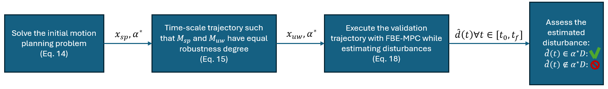
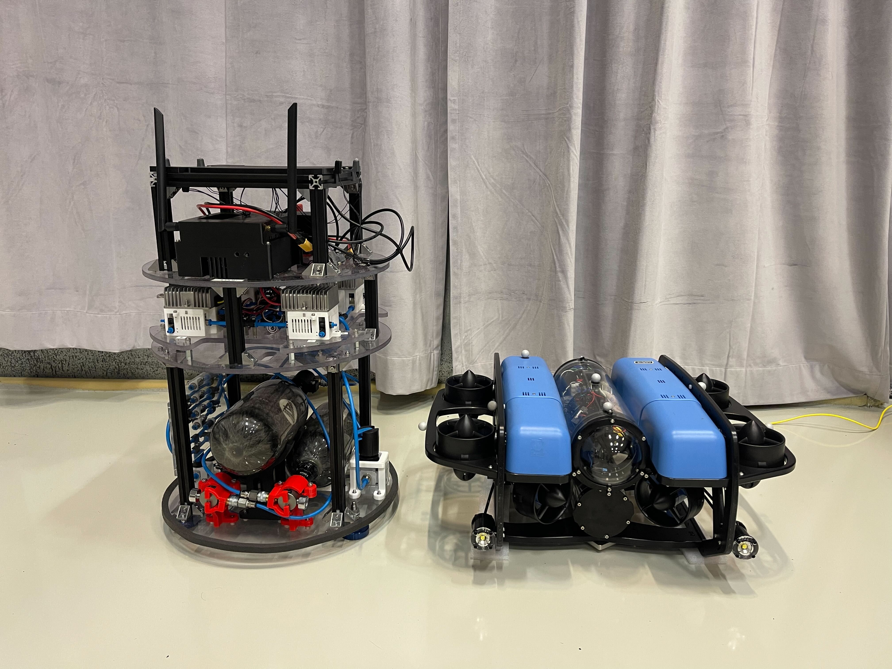

We present an experimental validation framework for space robotics that leverages underwater environments to approximate microgravity dynamics. While neutral buoyancy conditions make underwater robotics an excellent platform for space robotics validation, there are still dynamical and environmental differences that need to be overcome. Given a high-level space mission specification, expressed in terms of a Signal Temporal Logic specification, we overcome these differences via the notion of maximal disturbance robustness of the mission. We formulate the motion planning problem such that the original space mission and the validation mission achieve the same disturbance robustness degree. The validation platform then executes its mission plan using a near-identical control strategy to the space mission where the closed-loop controller considers the spacecraft dynamics. Evaluating our validation framework relies on estimating disturbances during execution and comparing them to the disturbance robustness degree, providing practical evidence of operation in the space environment.

The space planner is ran, quantifying the disturbance robustness degree of the space mission. The validation mission is constructed to ensure an equal disturbance robustness. Online control is performed using feedback equivalent Model Predictive Control making the underwater platform internally control the space platform. Online disturbance estimation is used to verify that the disturbances experienced during validation are within the disturbance robustness degree, providing evidence of operation in the space environment.
A planar spacecraft is tasked with an inspection mission:
$\phi_{sp} = \diamondsuit_{[20,25]}(\vec{\eta}\in red) \land \diamondsuit_{[0,37]}(\vec{\eta} \in blue) \land (\Box_{[50,55]}(\vec{\eta}\in white_1) \lor \Box_{[50,55]}(\vec{\eta} \in white_2))$
A 6DoF CubeSat spacecraft is tasked with an inspection mission of a passive satellite in a stable orbit around earth:
$\phi_{sp} = \bigwedge_{k={x,y,z}}\diamondsuit_{[\underline{t}_k,\overline{t}_k]}(\vec{\eta} \in \underline{A}_k \lor \vec{\eta} \in \overline{A}_k) \land \Box_{[0,90]}(\vec{\eta} \notin \textrm{Obj})$
The specification requires the CubeSat to observe the satellite from either the positive or negative side of all three axis.

@article{verhagen2026validation,
title={Validation of Space Robotics in Underwater Environments via Disturbance Robustness Equivalency},
author={Verhagen, Joris and Krantz, Elias and Sidrane, Chelsea and D\"orner, David and De Carli, Nicola and Roque, Pedro and Mao, Huina and Tibert, Gunnar and Stenius, Ivan and Fuglesang, Christer and Dimarogonas, Dimos V. and Tumova, Jana},
journal={arXiv preprint arXiv:TODO},
year={2026}
}